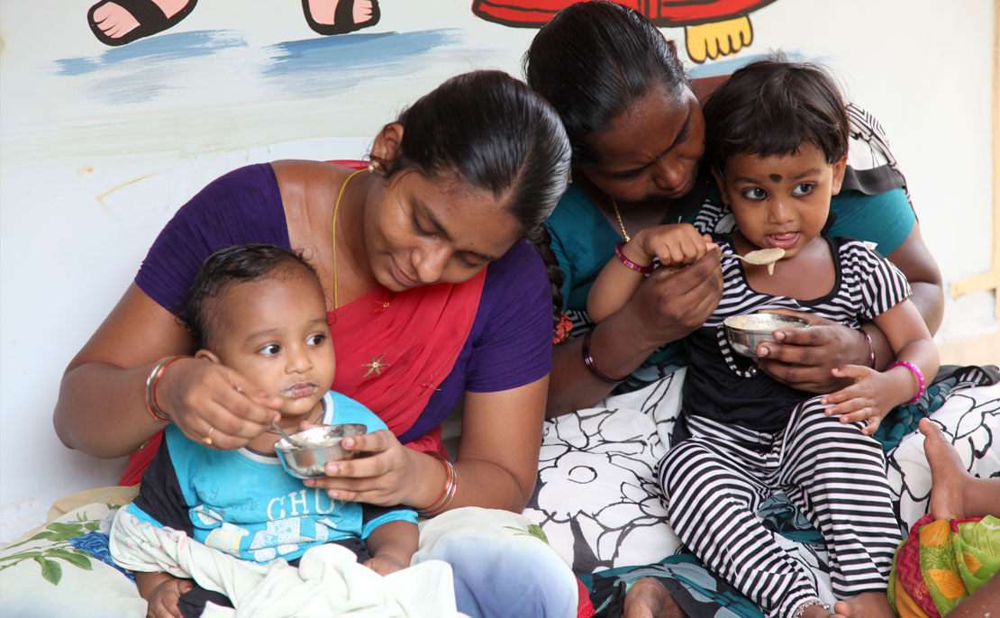

"The day I am not able to fly will be a sad day for me."
"Done with this fucking Navbar!!!."
"I don't believe in leaving things to luck. I believe in hard work and preparation"
"Never forget your roots, and always be proud of where you come from."
"The only limit to your success is your own imagination."
"The Heart of Giving"
Sir' Ratan Tata is the Chairman of the Sir Ratan Tata Trust and Allied Trusts, and the Sir Dorabji Tata Trust and the Allied Trusts. He is the Chairman of the Council of Management of the Tata Institute of Fundamental Research. He also serves on the board of trustees of Cornell University and the University of Southern California.
Ratan N Tata is the Chairman of Tata Trusts (comprising Sir Ratan Tata Trust and Allied Trusts, and the Sir Dorabji Tata Trust and Allied Trusts). Under his guidance and leadership, the Trusts have metamorphosed from being reactive charities to India’s premier philanthropic foundations, striving to transform lives of millions of individuals, through meaningful partnerships with like-minded non-profit organisations, communities, governments (state and central), corporates and foreign funding organisations.
Health Care
The Tata Trusts have been engaged for decades in the field of public health. They develop and support multi-pronged initiatives to address issues that cover both communicable and non-communicable diseases and range widely from malaria and tuberculosis to cancer, maternal and child health and mental health.The goal is to strengthen healthcare delivery capability through a multipronged approach that includes direct implementation, institution building, partnerships, and adoption of technology and innovation.

Nutrition
The Tata Trusts have been engaged for decades in the field of public health. They develop and support multi-pronged initiatives to address issues that cover both communicable and non-communicable diseases and range widely from malaria and tuberculosis to cancer, maternal and child health and mental health.The goal is to strengthen healthcare delivery capability through a multipronged approach that includes direct implementation, institution building, partnerships, and adoption of technology and innovation.
Education
Education has been a key focus area of the Tata Trusts since inception – the JN Tata Endowment was established in 1892 to provide scholarships to young Indians who wanted to go abroad for higher studies.Currently, through the education portfolio, the Tata Trusts strive to provide ‘Authentic learning for all’ in a comprehensive and holistic manner. The goal is to provide high-quality, authentic, real-world, active learning experiences that mould productive and well-rounded 21st century citizens while also working to ensure equitable access to these learning opportunities.